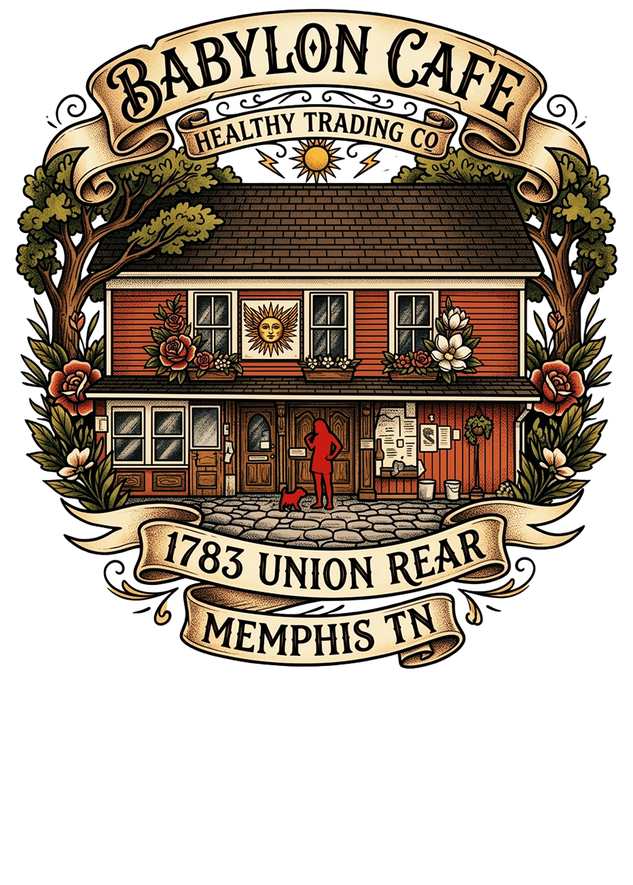
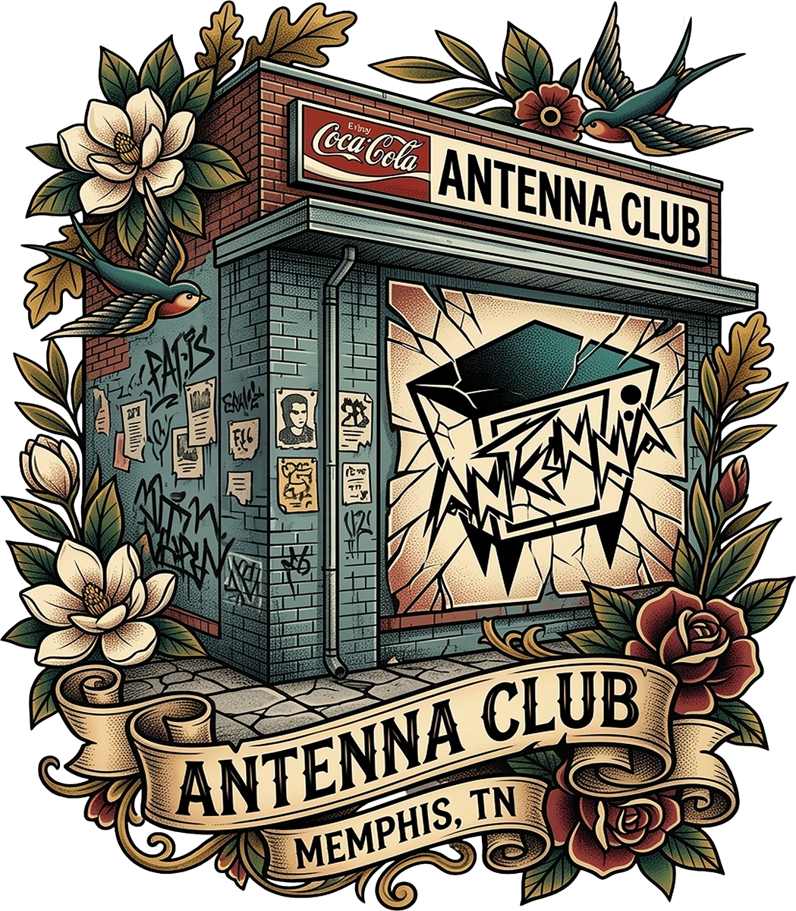
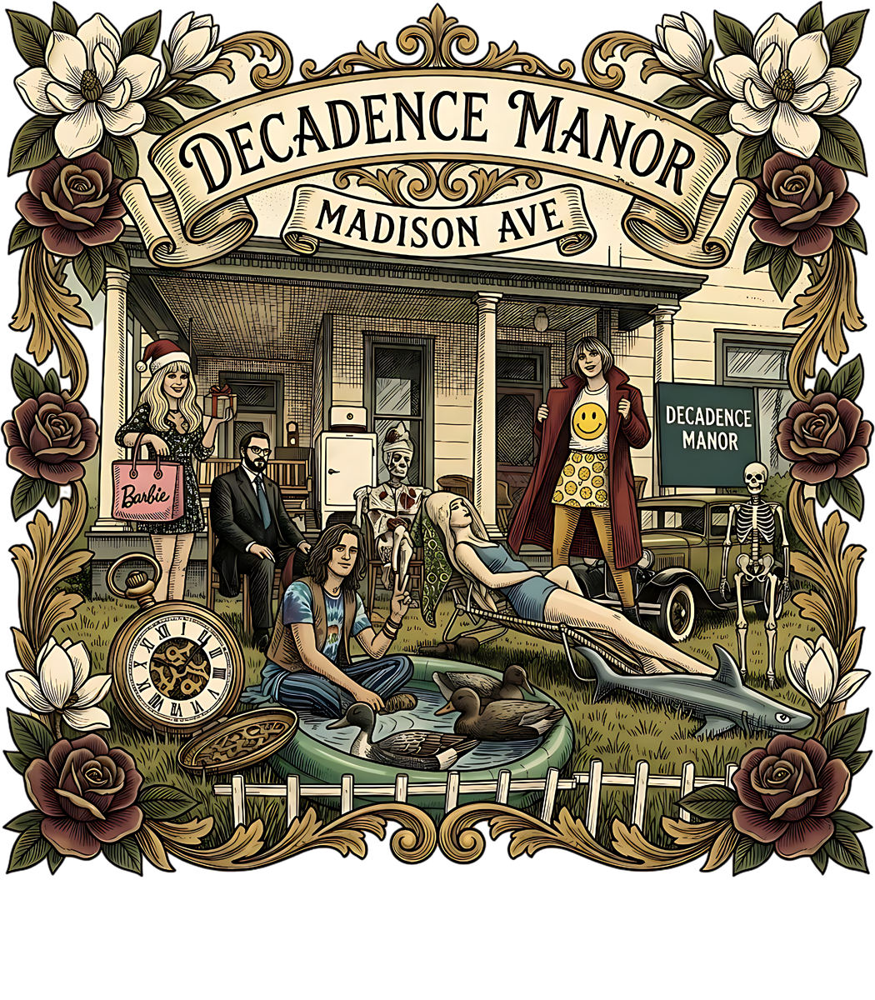
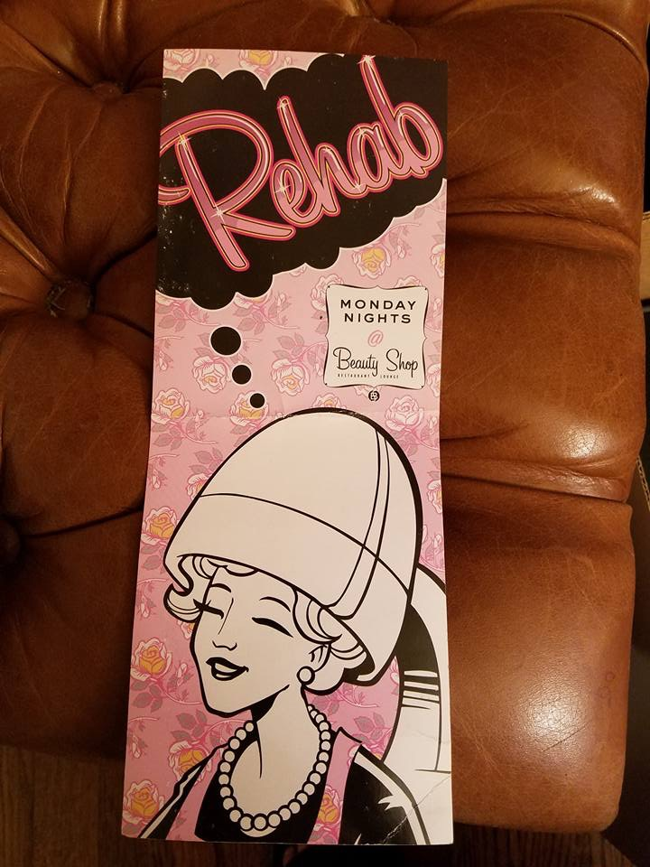
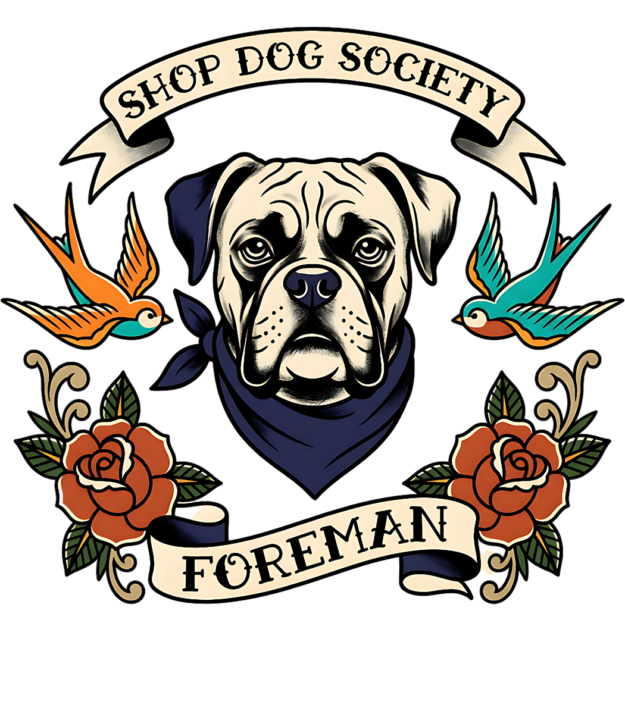
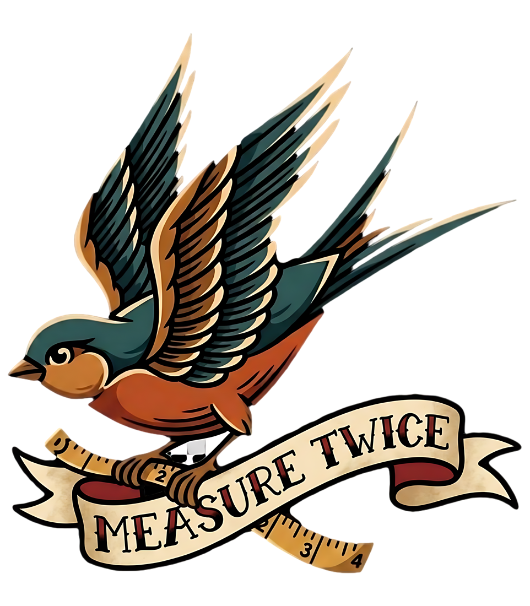
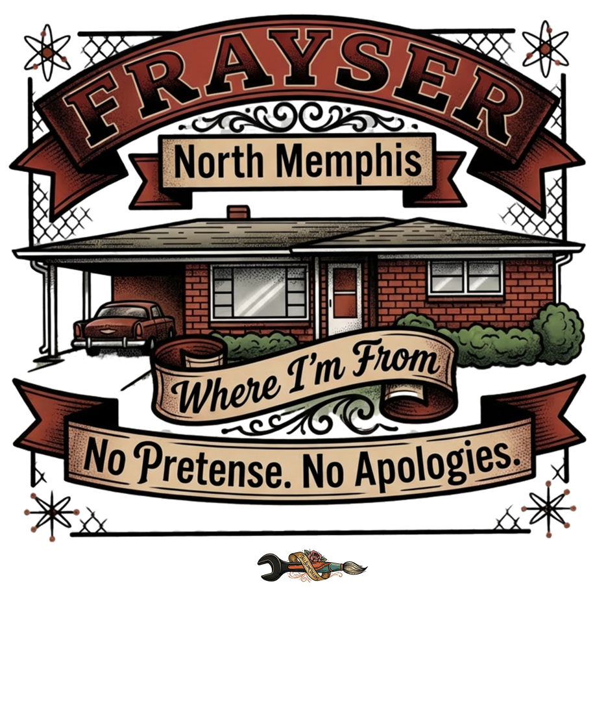
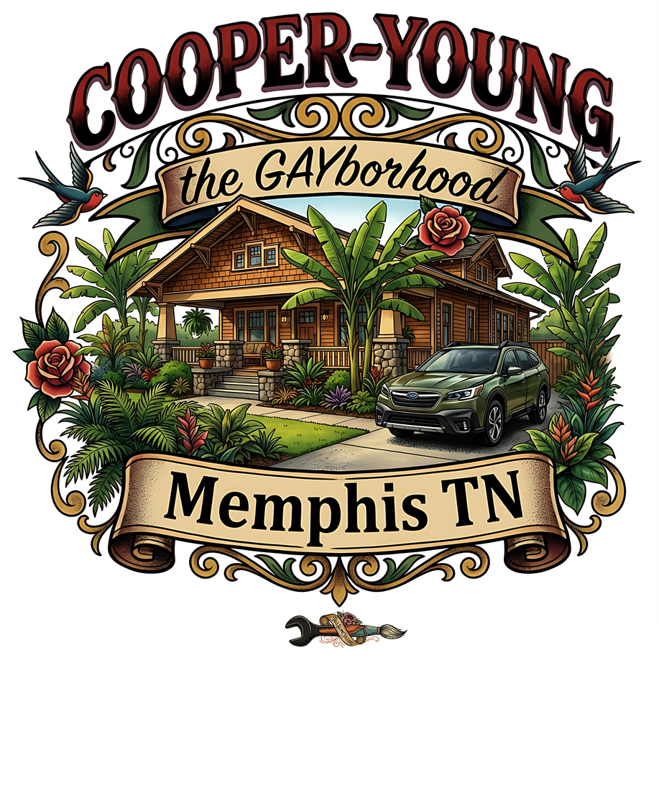
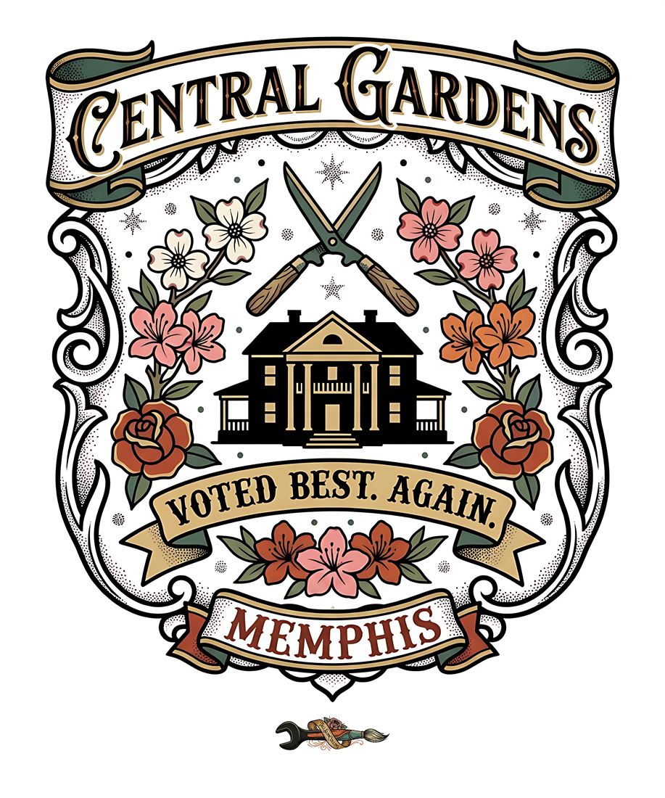
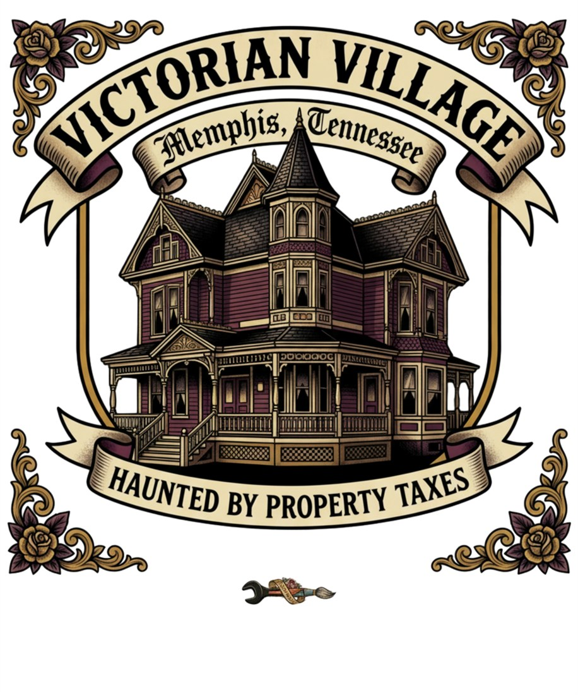

"TallSlimCollins is not a merch brand that tells stories. It is a creative archive and cultural world that happens to make things. The things you hold are artifacts from that world."
Four decades of Memphis, physical work, strange people, old buildings, objects, clothes, music and stories. From European antique drapery workrooms above Madison & Belvedere in the 1980s, to late-night shifts at Babylon Café and The Antenna Club, through gallery canvas conservation, to the dual practice today: enter the living archive.

"Drapery weights, tin-ceiling rattles, architectural salvage, and wearable Mid-South memoirs across four decades."
Real people, subculture institutions, late-night shifts, and architectural oddities from Stevan's notebooks. Each dispatch anchors an authentic Threadless wearable artifact.
"In 1985, I was 10 years old, living above my mother's European antique drapery workroom. Across the street sat the park with the iron stag that Jimmy would hose down at 2 AM before tap-dancing on the concrete bench... Jimmy was pure unvarnished Midtown royalty."
"Behind the kitchen door of 2115 Court Avenue: lamb shank reductions, mint tea steam, belly dancers in velvet, and the wildest cross-section of late-night Memphis counterculture. Cooking the line from 4 PM to 4 AM..."

"Sticky floors, soundboard hum, and Steve Bush holding down the back door. Black Flag, Fugazi, and every local band that mattered played through those speakers. If the walls could talk, they'd smell like cloves, draft beer, and feedback..."

"A rambling 1890s Central Gardens mansion rented to painters, sculptors, and musicians. Crystal chandeliers hanging over paint-splattered heart-pine floors, midnight critiques, and the grand salon where everything happened..."

"Head full of hair hanging past my shoulders so Robin cut it and put the deepest darkest deposit of Wella No1 Black on it with a blue wash over it like the neck of a blackbird. The concoction of pomade was one Joel and I mixed... You had to have a 10-inch stainless steel comb heated over an open flame to get through the wax. Riding in Will's '74 Monte Carlo on set of Blown..."

Before a room or an object can tell a story, it has to be true. Physical builds, restorations, textiles, and materials from four decades in the Mid-South.
A decade-long experimental living laboratory for boundary-pushing material and spatial design: custom large-scale waterfast botanical textiles, washable dupioni silk drapery sourcing, reclaimed brick patio masonry, and atmospheric landscape illumination.
Interior transformation of a historic 2-story outbuilding operating as Stevan’s creative studio: upstairs insulation & precision drywall, downstairs vertical beadboard wainscoting, and architectural landscape lighting.
Neutralizing aggressive internal corrosion on historic cast-iron planters, stabilizing century-old gates, and reviving architectural ironwork with industrial sealants and historic preservation integrity.
Production design and set curation for independent films (including 1996's Blown), large-scale painted botanical canvases, hand-built wood furnishings, and architectural assemblages made with timber, steel, and unvarnished honesty.
Four decades of unvarnished documentary photography, vintage club flyers, ticket stubs, Super 8 film, and Mid-South evidence across four eras.

Stevan with Kate Pierson & Tracy. Four decades of VIP hospitality, touring bands, and Memphis subculture.

Original flyer graphics from DJ Steve Anne residencies at Beauty Shop, Mollie Fontaine, and Antenna Club.
Cooper-Young and Downtown Memphis. Photo by Sallie Sabbatini on set in Will's 1974 Monte Carlo.
No product exists in a vacuum. Every garment, bandana, and art print is a wearable memoir produced by a real story, fulfilled via Threadless.
Heavyweight cotton prints honoring Dancing Jimmy, Babylon Café, The Antenna Club, and Decadence Manor.

Dedicated to the faithful studio supervisors snoozing in sawdust beneath workbenches and keeping watch over honest work.

Six sharecropper sisters and one brother in the Arkansas Delta. Cast-iron skillets, cotton dust, heirloom okra, and stubborn resilience.

Traditional American tattoo trade flash reimagined: Spottswood swallows carrying tape measures, heavy extension cords, and heritage binds.
Unvarnished love letters to the idiosyncratic enclaves, front porches, streetcars, and stubborn character of Memphis, TN.

Blue-collar grit, heavy industry, working hands, and an unshakeable refusal to put on airs. 121 artifacts.
America’s first community built by African Americans for African Americans. Deep shotgun home traditions. 109 artifacts.

Trestle bridges, Craftsman bungalows, front porch stoops, LGBTQ+ sanctuaries, and the bohemian heartbeat of Midtown. 188 artifacts.

Century-old oak canopies, historic brick alleyways, turn-of-the-century revivals, and timeless permanence. 89 artifacts.

Gilded-age Italianate and Gothic mansions, cast-iron spiked fences, lingering ghosts, and dry architectural humor. 41 artifacts.
Old-growth hardwood forest, century-old pavilion walks, stone gates, and Midtown cultural family memories. 109 artifacts.